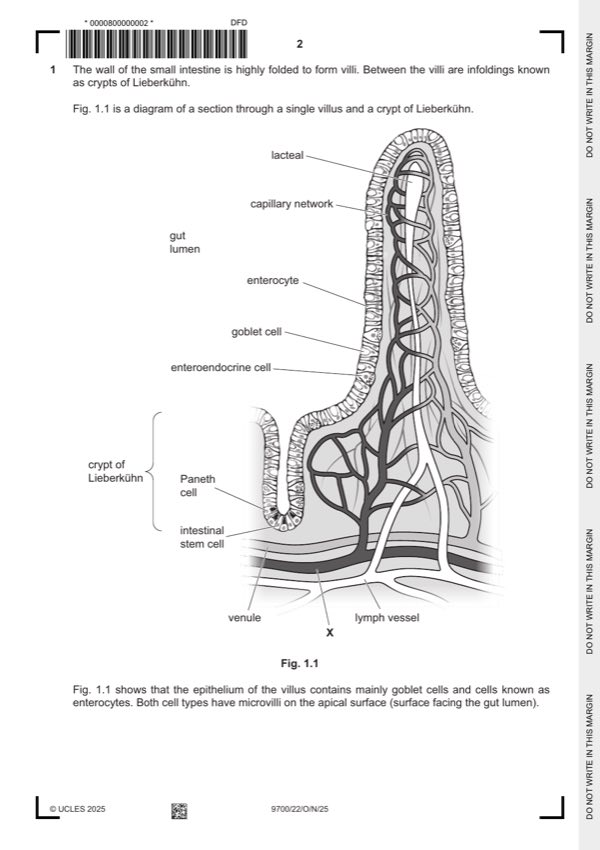

Question 1

Original paper page 2
Part 1(a) — solution
any two from: allow oras 2
Mark points
- Include the ideas shown in the solution above.
Part 1 — solution
cilium composed of microtubules
or
microvillus, composed of microfilaments / contains actin (filaments) ;
Mark points
- Include the ideas shown in the solution above.
Part 1(b) — solution
any one from: 1
protects (intestinal), epithelium / cells / lining ;
A examples of protection e.g. damage from stomach acid / digestion by enzymes
A less likely for epithelial cells to be damaged / AW
A traps, pathogens or (harmful), bacteria / microbes / microorganisms I dust
A prevents, pathogens / AW, from reaching cells
eases / reduces friction for, movement of, gut contents / substances (through digestive system) ;
habitat / nutrient source, for gut, microorganisms / flora ; AW
AVP ; e.g. location for immune system cells
R if stated as being in the gas exchange system
Mark points
- Include the ideas shown in the solution above.
Part 1(c)(i) — solution
arteriole ; A (small) artery 1
University Press & Assessment 2025 Page 8 of 21
9700/22 Cambridge International AS & A Level – Mark Scheme October/November 2025
Mark points
- Include the ideas shown in the solution above.
Part 1(c)(ii) — solution
any two from: 2
(at arteriole end of capillary) high, hydrostatic / blood, pressure ;
A ref. to hydrostatic pressure gradient
(ultra)filtration / described ; e.g. fluid / plasma / water and solutes, forced / comes out of, capillaries / blood
glucose / amino acids / ions, leave (blood) or (large / plasma) proteins remain (in blood) ;
R if stated, red blood cells / platelets, leave
through, fenestrations / fenestrae / endothelial pores
or
pores / gaps / spaces, in, capillary wall / endothelium / between cells ;
Mark points
- Include the ideas shown in the solution above.
Part 1(d) — solution
any three from: 3
after, secreted / released, by enteroendocrine cells
transport of, peptide / GLP-1 / ligand, in, blood / circulation ;
to, target cells (which are cells of the, stomach / pancreas) ;
binding of, peptide / GLP-1 / ligand, to receptor ; context can be cell surface membrane or intracellular
ref. to, specificity / complementary ; must be in correct context of GLP-1 binding to receptor
(binding) triggers / sets off / AW, events within (target) cell (leading to the response) ;
A examples e.g. signal transduction / triggers enzyme cascade
Mark points
- Include the ideas shown in the solution above.
Part 1(e)(i) — solution
prophase 1
metaphase R if interphase or cytokinesis stated
;
anaphase
telophase
University Press & Assessment 2025 Page 9 of 21
9700/22 Cambridge International AS & A Level – Mark Scheme October/November 2025
Mark points
- Include the ideas shown in the solution above.
Part 1(e)(ii) — solution
any three from: ref. to nucleus / nucleolus, is neutral 3
presence of, vesicles / vacuoles, qualified ; e.g. many / secretory / Golgi
A storage vesicles
correct ref. to exocytosis ;
A fusion of, vesicle / vacuole, with cell surface membrane
much / high proportion of / a lot of / AW, rough endoplasmic reticulum ;
I ER / RER / rough ER
A many ribosomes
rough endoplasmic reticulum / ribosomes, site of, peptide / polypeptide / protein / enzyme, synthesis ;
ecf for abbreviating rough endoplasmic reticulum previously
AVP ; e.g. presence of mitochondria to provide, ATP / energy, for, protein synthesis /
movement of vesicle to cell surface membrane /
exocytosis mp2 can also be awarded here only if ref. has been made within response to vesicles / vacuoles
Mark points
- Include the ideas shown in the solution above.
Part 1(e)(iii) — solution
Paneth cell is, differentiated / specialised (for, secretion / its function) 1
or
stem cells are, undifferentiated / not differentiation / not specialised ;
Mark points
- Include the ideas shown in the solution above.
Part 1 — solution
ref. to, contamination / contaminated ;
A presence of, pathogen / V. cholerae / bacterium in correct context (can look for ora)
Mark points
- Include the ideas shown in the solution above.
Part 1 — solution
component causing the antigen(s) ; I weak / weakened / toxin antibody
desired response A toxoid / inactivated toxin
R dead antigen
A weakened / attenuated / dead,
pathogen / V. cholerae
Mark points
- Include the ideas shown in the solution above.
Part 1 — solution
immobilised (overall) greater, productivity / yield / hydrolysis (of lactose in milk) ; I activity
Mark points
- Include the ideas shown in the solution above.
Part 1 — solution
blood enters (heart) via / in, pulmonary vein(s) ;
Mark points
- Include the ideas shown in the solution above.